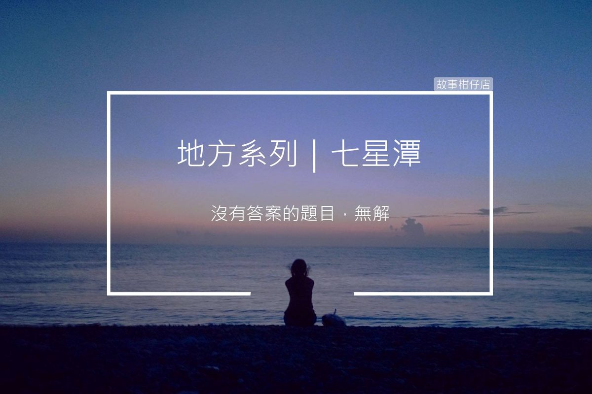

七星潭：青石邊的等待

青石公的傳說
很久以前，有條青龍愛上個美麗的有夫之婦，為了與這個女子在一起，就害她丈夫掉到懸崖下摔死，自己再變成她先生的樣子，和女子一起生活。不久，還是被女子發現事實，於是和村裡的人一起圍補牠，這條青龍只能一直逃跑，最後跌入海裡，變成了一塊青石。
後來，傳聞未婚男女若想求得好姻緣，只要撫摸「青石公」或坐在上面，很快就能覓得良緣。
〈七星潭：青石邊的等待〉
Msn Messenger
Sara：好喜歡海浪的聲音……(線上)
幸福，就是找一個溫暖的好人陪你。
看到螢幕上的小綠人，不停下線又上線，阿清忍不住對在髒衣堆中找東西的室友提醒：「JA，有人找你問微分。」
「沒空。」
「可是很簡單欸。」吵人的上線聲能忽略，可他一眼就看見題目，不回答心裡憋著難受。
「不然你教她，去球場了掰。」套上排汗衫，年輕男子提著球便離開寢室。
坐在七星潭的堤防上，阿清回想起那一天，開始替代室友幫學妹惡補數學。就這樣一晚接一晚，連續兩週，JA不管，學妹沒問，他也就沒機會說，一直到昨天。
「學長，要不要去七星看跨年煙火，五點跟你約青石那邊見喔！」
望向遠方，穿粉洋裝的女孩依約提前到來，靠坐在青石邊上，阿清捶了下自己的大腦。阿，該怎麼講才合理。
1.放她鴿子：讓JA黑掉。
2.繼續裝傻：說JA有事不能來，請他轉告。
3.勇敢承認：說JA的MSN其實是他回的。
4.讓她毀約：讓別人有事找她先走。
苦惱，早知道就不回那題微分，沒有答案的題目，無解。
4:55分，天色暗起，浪潮的聲音也大到吞沒他的自言自語，四周遊客逐漸朝著灘邊湧進。咻蹦一聲，主辦單位試升的一株煙火，在上空聚成團霧，久久不散。
忽然一個猛力的拍肩，阿清轉頭看，JA不知何時出現在後方，笑著說：「謝了兄弟，接下來換我。」露出個暖男笑容，爽朗地大步邁向沙灘。
5.以上皆非。
流動的人群越來越多，喧鬧的舞台音樂也讓阿清突然有些害怕。他決定從堤防邊站起，等等繞去速食店買個套餐，就這樣安靜的在那裏待過一整晚吧。
每個黃昏時刻，
讓故事柑仔店
為您說說地方的故事。